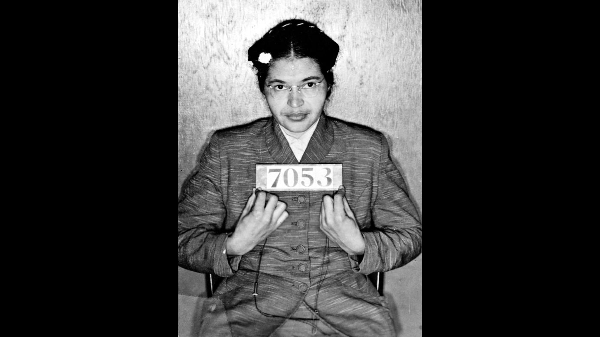

En la historia de la lucha por los derechos civiles en Estados Unidos, el nombre de Rosa Parks brilla con un resplandor especial como símbolo de valentía, dignidad y resistencia. Rosa Parks, nacida el 4 de febrero de 1913 en Tuskegee, Alabama, se convirtió en un ícono de la lucha contra la segregación racial y la injusticia sistémica que prevalecía en la sociedad estadounidense del siglo XX.
Desde temprana edad, Rosa Parks experimentó de primera mano la discriminación racial y la desigualdad en su comunidad. Sin embargo, en lugar de aceptar pasivamente estas injusticias, se convirtió en una defensora incansable de la justicia y la igualdad.
Movie Reviews:
There are dozens of different potato varieties. They are usually described as early, second early and maincrop.
!DOCTYPE html>Here you can read our handy guide about what to do when.
This page was written by ivy@example.org for Example.
There are dozens of different potato varieties.
They are usually described as early, second early and maincrop potatoes.
div class="page">There are dozens of different potato varieties.
They are usually described as early, second early and maincrop potatoes.